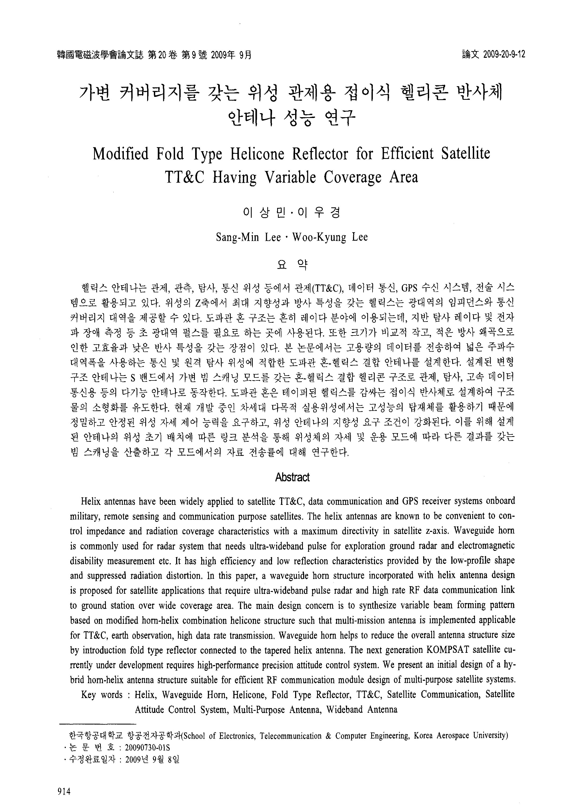

연구실적 · 국내전문학술지
가변 커버리지를 갖는 위성 관제용 접이식 헬리콘 반사체 안테나 성능 연구
Modified Fold Type Helicone Reflector for Efficient Satellite TT&C Having Variable Coverage Area

초록
헬릭스 안테나는 관제, 관측, 탐사, 통신 위성 등에서 관제(TT&C), 데이터 통신, GPS 수신 시스템, 전술 시스템으로 활용되고 있다 위성의 Z축에서 최대 지향성과 방사 특성을 갖는 헬릭스는 광대역의 임피던스와 통신 커버리지 대역을 제공할 수 있다. 도파관 혼 구조는 흔히 레이다 분야에 이용되는데, 지반 탐사 레이다 및 전자파 장애 측정 등 초 광대역 펄스를 필요로 하는 곳에 사용된다. 또한 크기가 비교적 작고, 적은 방사 왜곡으로 인한 고효율과 낮은 반사 특성을 갖는 장점이 있다. 본 논문에서는 고용량의 데이터를 전송하여 넓은 주파수 대역폭을 사용하는 통신 및 원격 탐사 위성에 적합한 도파관 혼-헬릭스 결합 안테나를 설계한다. 설계된 변형 구조 안테나는 S 밴드에서 가변 빔 스캐닝 모드를 갖는 혼-헬릭스 결합 헬리콘 구조로 관제, 탐사, 고속 데이터 통신용 등의 다기능 안테나로 동작한다. 도파관 혼은 테이퍼된 헬릭스를 감싸는 접이식 반사체로 설계하여 구조물의 소형화를 유도한다. 현재 개발 중인 차세대 다목적 실용위성에서는 고성능의 탑재체를 활용하기 때문에 정밀하고 안정된 위성 자세 제어 능력을 요구하고, 위성 안테나의 지향성 요구 조건이 강화된다. 이를 위해 설계된 안테나의 위성 초기 배치에 따른 링크 분석을 통해 위성체의 자세 및 운용 모드에 따라 다른 결과를 갖는 빔 스캐닝을 산출하고 각 모드에서의 자료 전송률에 대해 연구한다.
인용
이상민 (Sang-Min Lee), 이우경 (Woo-Kyung Lee), “가변 커버리지를 갖는 위성 관제용 접이식 헬리콘 반사체 안테나 성능 연구”, 한국전자파학회논문지, 제20권 9호, 2009년
BibTeX
@article{Lee_2009,
title={Modified Fold Type Helicone Reflector for Efficient Satellite TT&C Having Variable Coverage Area},
volume={20},
ISSN={1226-3133},
url={http://dx.doi.org/10.5515/kjkiees.2009.20.9.914},
DOI={10.5515/kjkiees.2009.20.9.914},
number={9},
journal={The Journal of Korean Institute of Electromagnetic Engineering and Science},
publisher={Korean Institute of Electromagnetic Engineering and Science},
author={Lee, Sang-Min and Lee, Woo-Kyung},
year={2009},
month=Sept,
pages={914–923}
}